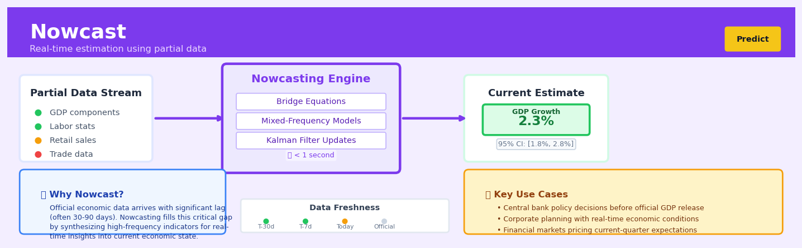

Nowcast#


The biggest nowcasting mistake is treating it like a forecast when it's actually solving a different problem: estimating what's happening right now with incomplete information. Think of it as filling in a partially completed puzzle rather than predicting the future, which means your model evaluation should focus on how well you synthesize sparse, asynchronous data streams rather than traditional forecast accuracy metrics. The Federal Reserve Bank of New York's nowcast gets updated multiple times per week as new data arrives, demonstrating that nowcasts are living estimates that evolve with information flow, not static predictions.
The 60-Second Version#
What it does: Nowcasting estimates what’s happening right now in your business or market before the official numbers arrive.
When to use it: You need to make decisions today, but the data you rely on—sales figures, economic indicators, demand levels—won’t be officially available for weeks or months.
What you get back: A current estimate with a confidence interval, updated as new signals arrive, so you can act on today’s reality rather than last quarter’s report.
At a Glance
Difficulty |
Moderate |
Typical runtime |
Minutes to hours (model updates daily or weekly) |
What you bring |
High-frequency proxy data (search trends, transactions, sentiment) plus the lagging official metric you want to estimate |
What you get |
Real-time estimate of current conditions with uncertainty bands |
Heuristix bucket |
Predict — Machine Learning & Forecasting |
Nowcasting doesn’t predict the future—it illuminates the present you can’t yet measure.
Learning Objectives#
After reading this chapter, a business user will be able to:
Identify situations where official statistics arrive too late for decision-making and nowcasting can fill the gap, such as estimating current-quarter GDP before publication or tracking real-time sales trends during promotional periods.
Interpret nowcast probability distributions and confidence intervals to communicate both the central estimate and the uncertainty around current business conditions to executive stakeholders.
Decide whether to adjust inventory levels, marketing spend, or operational capacity based on nowcast signals that indicate the present state differs significantly from recent historical patterns.
After reading this chapter, a data scientist will be able to:
Implement a nowcasting model by correctly combining mixed-frequency data sources (daily, weekly, monthly) and handling the ragged edge problem where different series update at different times.
Tune the balance between responsiveness to new high-frequency data and stability of estimates by adjusting kalman filter parameters, bridge equation weights, or regularization strength in the underlying econometric model.
Validate nowcast accuracy through pseudo-real-time backtesting that mimics actual data release schedules and diagnose failures caused by structural breaks, data revisions, or changing correlations between high-frequency indicators and the target variable.
Overview#
Nowcasting is a forecasting methodology that estimates the current or very recent state of an economic or business variable before official measurements become available. It belongs to the family of real-time prediction methods and bridges the gap between lagging official statistics and the need for immediate decision-making. By synthesising high-frequency, readily available data sources with established econometric models, nowcasting produces probabilistic estimates of the present that would otherwise remain unknown for weeks or months.
When to Use This#
Use this when official statistics have significant publication delays — GDP figures, inflation indices, and unemployment rates often lag by 4–8 weeks; nowcasting provides actionable estimates in the interim.
Use this when you have access to high-frequency proxy variables — if you can observe daily credit card transactions, weekly job postings, or real-time sensor data that correlates with your target variable, nowcasting can exploit these leading indicators.
Use this when business decisions cannot wait for official data releases — inventory planning, pricing adjustments, and resource allocation often require current-state awareness that lagging reports cannot provide.
Use this when your target variable is measured infrequently but related variables are observed continuously — monthly retail sales can be nowcast using daily foot traffic or e-commerce clickstream data.
Use this when you need to update forecasts as new partial information arrives — nowcasting frameworks naturally accommodate the “ragged edge” problem where different variables have different publication lags.
Use this when combining mixed-frequency data — quarterly targets with monthly, weekly, or daily predictors require the temporal aggregation that nowcasting methods handle elegantly.
Do NOT use this when your target variable is directly observable in real-time — if you already have the measurement, nowcasting adds unnecessary model uncertainty.
Do NOT use this when high-frequency proxies are unavailable or unreliable — nowcasting quality depends entirely on the informativeness and timeliness of predictor variables.
Do NOT use this when the relationship between proxies and target is unstable — structural breaks, regime changes, or pandemic-level disruptions can invalidate historical correlations.
Do NOT use this for long-horizon forecasting — nowcasting is designed for the immediate present and very near term; traditional forecasting methods are more appropriate beyond 1–2 periods.
Questions This Answers#
Understanding What’s Happening Right Now#
Where do we stand on monthly revenue with only two weeks of data in?
Are we going to hit our quarterly sales target based on what we’re seeing so far this month?
What’s our current inventory turnover looking like before the official count next week?
Is customer churn accelerating this month, or are we on track with our forecast?
How are we tracking against our annual budget halfway through the quarter?
Making Decisions Without Waiting for Official Reports#
Should we increase our marketing spend this week, or wait until month-end numbers come in?
Do we need to adjust our production schedule now based on early demand signals?
Can we afford to hire those three additional sales reps this quarter given where we’re trending?
Should we alert the executive team about a potential shortfall, or are we still within acceptable range?
Is it worth launching that promotional campaign next week, or have we already reached our target growth rate?
Comparing Current Performance to Expectations#
Are we outperforming last quarter at this same point, or falling behind?
How does our week-three performance compare to the same period last year?
Which regions are tracking ahead of plan and which are lagging with three weeks left in the quarter?
Is our new product launch performing better or worse than our previous launch at this stage?
How It Works#
Imagine you’re trying to figure out how crowded the mall is right now on Black Friday, but the official visitor count won’t be published until next week. You can’t wait that long—you need to decide whether to send more staff today. So instead, you look at things you can see immediately: the parking lot is 90% full (you check the webcam), credit card transactions are spiking (your payment processor shows real-time data), and social media mentions of your store have tripled in the past hour. You feed all these signals into a model trained on past Black Fridays, and it tells you: “Based on these indicators, the mall is probably at 85% capacity right now.” That’s nowcasting—using fast, available data to estimate what’s happening in the present before the official numbers arrive.
TRADITIONAL REPORTING vs NOWCASTING
Official GDP (published quarterly, 1-2 month delay)
┌─────────────────────────────────────┐
│ Q1: 2.1% Q2: ??? │ ← We're here (mid-May)
│ ▲ │ but Q1 data just
│ └─ Won't know until June │ published in April
└─────────────────────────────────────┘
NOWCASTING PROCESS
Step 1: Collect High-Frequency Data (available NOW)
┌──────────────┬──────────────┬──────────────┐
│ Credit card │ Job postings │ Electricity │
│ transactions │ (daily) │ consumption │
│ (real-time) │ │ (weekly) │
└──────────────┴──────────────┴──────────────┘
│ │ │
└──────────────┼──────────────┘
↓
Step 2: Feed into trained model that knows historical
relationships between these signals and GDP
↓
┌──────────────────────────┐
│ NOWCAST ESTIMATE │
│ Q2 GDP: ~2.4% ± 0.3% │ ← Available TODAY
│ (Confidence interval) │
└──────────────────────────┘
Step 1: Identify the target variable. Choose what you’re trying to estimate in the present—usually something measured infrequently or with long delays, like quarterly GDP, monthly retail sales, or weekly disease case counts.
Step 2: Gather high-frequency proxy data. Collect datasets that update much faster than your target and correlate with it historically. For GDP, this might include daily credit card spending, weekly unemployment claims, real-time shipping container movements, and hourly electricity usage.
Step 3: Align the timing. Match your high-frequency data to historical periods when the official numbers were known. If you’re estimating May GDP, you look at what credit card data, job postings, and energy use looked like during previous months, and how those related to the GDP figures eventually published for those months.
Step 4: Train a statistical model. Build a model that learns the relationships between your fast indicators and the slow official statistic. The model discovers patterns like “when credit card spending rises 3% week-over-week and job postings increase 5%, GDP typically grows around 2.5%.”
Step 5: Apply to current incomplete data. Feed today’s high-frequency data into the trained model. Even though the official statistic doesn’t exist yet, the model uses the current indicator values to produce its best estimate of what that number will be when it’s finally published.
Step 6: Update continuously. As new high-frequency data arrives (hourly, daily, or weekly), re-run the model to refine the nowcast, progressively narrowing the confidence interval as more information accumulates.
The key insight: Nowcasting works because the economy leaves real-time footprints in fast-moving data streams, and by learning the historical relationship between these footprints and official measurements, we can estimate the present before it becomes officially measured history.
The Intuition#
Imagine you are a restaurant owner trying to estimate how many customers will dine with you tonight. The “official” count will only be known at closing time, but you need to make decisions about staffing, inventory, and table arrangements right now. Fortunately, you have access to several leading indicators: the number of reservations made, the foot traffic past your storefront this morning, local event calendars, weather forecasts, and social media mentions of your restaurant. None of these individually tells you the exact customer count, but together they paint a coherent picture of what tonight will look like. This is nowcasting in essence—synthesising partial, timely signals to estimate a quantity you cannot yet directly observe.
The fundamental challenge nowcasting addresses is the mismatch between the speed of decision-making and the speed of official measurement. Central banks need to understand current economic conditions before GDP figures are published. Retailers need to know current demand before monthly sales reports are compiled. Healthcare systems need to track disease prevalence before epidemiological surveys are processed. In each case, waiting for the official number means acting on stale information, while acting without any estimate means flying blind. Nowcasting occupies the valuable middle ground: providing rigorous, probabilistic estimates that update continuously as new information arrives.
The technical elegance of nowcasting lies in its treatment of time and information. Rather than assuming all variables are observed simultaneously, nowcasting models explicitly represent the “ragged edge” of data availability—where some series are current, some lag by days, and others by weeks. The model learns not just the relationships between variables, but also how to optimally extract signal from whatever partial information happens to be available at any given moment. As each new data release arrives, the nowcast updates, becoming progressively more accurate as the target period approaches. This Bayesian updating process means that a nowcast made at the start of a quarter will be more uncertain than one made near the quarter’s end, and the model’s confidence intervals naturally reflect this evolving information state.
The Mathematics#
Problem Setup and Notation#
Let \(y_t\) denote the target variable of interest observed at low frequency (e.g., quarterly GDP growth). We seek to estimate \(y_T\) for the current or most recent period \(T\) before its official release. Let \(\mathbf{x}_t = (x_{1,t}, x_{2,t}, \ldots, x_{k,t})'\) be a vector of \(k\) high-frequency indicator variables (monthly, weekly, or daily) that are potentially informative about \(y_t\).
Define \(\Omega_v\) as the information set available at vintage \(v\), which includes all observations of \(y\) and \(\mathbf{x}\) released by time \(v\). The nowcast is the conditional expectation:
The State-Space Representation#
Nowcasting is most naturally formulated in state-space form, which accommodates mixed frequencies and missing observations. The system comprises a measurement equation linking observables to latent states and a transition equation governing state dynamics.
Measurement Equation:
where \(\mathbf{z}_t\) is the vector of observed variables at time \(t\), \(\boldsymbol{\alpha}_t\) is the latent state vector, \(\mathbf{H}\) is the observation matrix, and \(\boldsymbol{\epsilon}_t\) is measurement error with covariance \(\mathbf{R}\).
Transition Equation:
where \(\mathbf{F}\) is the state transition matrix and \(\boldsymbol{\eta}_t\) is the state innovation with covariance \(\mathbf{Q}\).
The Dynamic Factor Model#
A common nowcasting specification assumes that the co-movement of many indicator series is driven by a small number of latent common factors. Let \(f_t\) denote a scalar common factor (or vector \(\mathbf{f}_t\) for multiple factors). The measurement equation becomes:
where \(\lambda_i\) is the factor loading for indicator \(i\), and the idiosyncratic errors \(e_{i,t}\) are assumed mutually uncorrelated. The target variable relates to the factor via:
The factor follows an autoregressive process:
Temporal Aggregation for Mixed Frequencies#
When \(y_t\) is quarterly but indicators are monthly, we require a temporal aggregation constraint. Let \(f_t^{(m)}\) denote the monthly factor. The quarterly target relates to within-quarter monthly factors as:
For flow variables, this is a simple average. For stock variables measured at quarter-end, we use:
The Kalman Filter and Smoother#
Given the state-space representation, optimal nowcasts are computed via the Kalman filter. The filter recursively computes:
Prediction Step:
Update Step (when observation \(\mathbf{z}_t\) arrives):
where \(\mathbf{K}_t\) is the Kalman gain and \(\mathbf{P}_{t|t}\) is the state covariance conditional on observations through time \(t\).
Handling the Ragged Edge#
At vintage \(v\), some indicators may have observations through month \(m\), others through \(m-1\), and the target \(y\) may be missing entirely for the current quarter. The Kalman filter handles this naturally: when \(z_{i,t}\) is missing, we simply skip the update for that element, treating its row in \(\mathbf{H}\) as absent. This allows the filter to optimally combine whatever information is available.
Parameter Estimation#
Parameters \(\boldsymbol{\theta} = \{\boldsymbol{\lambda}, \beta, \boldsymbol{\phi}, \mathbf{R}, \mathbf{Q}\}\) are estimated by maximum likelihood. The log-likelihood is computed as a by-product of the Kalman filter via the prediction error decomposition:
where \(\mathbf{v}_t = \mathbf{z}_t - \mathbf{H} \boldsymbol{\alpha}_{t|t-1}\) is the prediction error and \(\mathbf{S}_t = \mathbf{H} \mathbf{P}_{t|t-1} \mathbf{H}' + \mathbf{R}\) is its covariance.
Optimisation is typically performed via quasi-Newton methods (BFGS) or the Expectation-Maximisation (EM) algorithm.
Assumptions#
Linearity: The state-space model assumes linear relationships between states and observables.
Gaussianity: Kalman filter optimality requires Gaussian disturbances; non-Gaussian extensions exist but are computationally intensive.
Stationarity: Factor dynamics are assumed stationary; unit roots require differencing or alternative specifications.
Correct specification: Factor loadings and lag orders are correctly specified; model selection criteria (BIC, AIC) guide these choices.
Edge Cases#
All indicators missing: The nowcast reverts to the unconditional mean with maximum uncertainty.
Single dominant indicator: The model reduces to a bivariate regression; factor structure adds no value.
Structural breaks: Pre-break parameters produce biased nowcasts post-break; rolling estimation or regime-switching extensions are required.
Understanding the Mathematics#
The State-Space Model#
The equation:
Read it aloud:
The first equation says: the observed value at time t equals a transformation matrix times the hidden state at time t, plus some measurement noise. The second equation says: the hidden state at the next time step equals a transition matrix times the current hidden state, plus some process noise scaled by a selection matrix.
What each symbol means:
\(y_t\) — the observed economic indicator we can measure (e.g., retail sales data)
\(\alpha_t\) — the hidden “true” state of the economy we’re trying to estimate
\(Z_t\) — the observation matrix that links hidden states to what we actually see
\(T_t\) — the transition matrix describing how states evolve over time
\(R_t\) — the selection matrix that determines which states are affected by shocks
\(\epsilon_t\) — measurement error (noise in our observations)
\(\eta_t\) — process error (unexpected changes in the true state)
A concrete numerical example:
Suppose we’re nowcasting monthly GDP. Our hidden state \(\alpha_t\) might be [2.1, 0.3] representing 2.1% growth and 0.3% acceleration. If \(Z_t = [1, 0]\) (we observe only growth, not acceleration) and \(\epsilon_t = 0.05\), then:
We observe 2.15% GDP growth, even though the true growth was 2.1%.
Why this equation matters:
This two-equation structure lets us separate what we actually observe from the underlying truth, enabling us to filter out noise and make probabilistic statements about the current economic state before official data arrives.
The Kalman Filter Update#
The equation:
Read it aloud:
Our best estimate of the current state equals our previous prediction plus the Kalman gain times the surprise—the difference between what we actually observed and what we expected to observe.
What each symbol means:
\(\alpha_{t|t}\) — our updated estimate of the state after seeing today’s data
\(\alpha_{t|t-1}\) — our prediction made yesterday about today’s state
\(K_t\) — the Kalman gain, determining how much we trust new data versus our prior belief
\(y_t - Z_t\alpha_{t|t-1}\) — the “innovation” or forecast error
A concrete numerical example:
We predicted GDP growth would be 2.0% (\(\alpha_{t|t-1} = 2.0\)). We observe 2.15% (\(y_t = 2.15\)) with \(Z_t = 1\). If the Kalman gain \(K_t = 0.6\), then:
We revise our GDP estimate to 2.09%, trusting the new data but not completely abandoning our prior forecast.
Why this equation matters:
This is the heart of nowcasting—it mathematically balances skepticism and responsiveness, preventing us from either ignoring new information or overreacting to every noisy data point.
The Kalman Gain#
The equation:
Read it aloud:
The Kalman gain equals our uncertainty about the state times the observation matrix, divided by the total uncertainty (state uncertainty plus measurement uncertainty).
What each symbol means:
\(P_{t|t-1}\) — our uncertainty about the predicted state (covariance matrix)
\(H_t\) — measurement noise variance (how noisy our observations are)
The prime (’) — matrix transpose
A concrete numerical example:
If our state prediction uncertainty is \(P_{t|t-1} = 0.04\), \(Z_t = 1\), and measurement noise \(H_t = 0.01\), then:
We weight new observations at 80% because we’re fairly uncertain about our prediction relative to measurement accuracy.
Why this equation matters:
This automatically calibrates how much we update our beliefs—high when we’re uncertain or data is reliable, low when we’re confident or data is noisy—without requiring manual judgment calls.
The Big Picture#
The mathematics of nowcasting solves a fundamental problem: how do we estimate something right now when official measurements lag by weeks, arrive at different frequencies, and contain noise? The state-space framework treats the true economic state as hidden and uses a recursive Bayesian updating process—the Kalman filter—to optimally blend imperfect, mixed-frequency data with our understanding of economic dynamics. This approach was chosen because it provides not just point estimates but full probability distributions, handles missing data gracefully, and updates instantly as each new data point arrives. In essence, the math creates a living, breathing estimate that learns from every piece of information, weighs it appropriately, and quantifies its own uncertainty.
Python Implementation#
import numpy as np
import pandas as pd
from scipy.optimize import minimize
from scipy.linalg import solve_discrete_lyapunov
import warnings
warnings.filterwarnings('ignore')
# =============================================================================
# Nowcasting Implementation with Dynamic Factor Model
# =============================================================================
def simulate_nowcast_data(n_months=120, n_indicators=5, seed=42):
"""
Simulate a quarterly target and monthly indicators driven by a common factor.
"""
np.random.seed(seed)
# True parameters
phi = 0.8 # Factor AR(1) coefficient
sigma_f = 0.5 # Factor innovation std
lambdas = np.random.uniform(0.5, 1.5, n_indicators) # Factor loadings
sigma_e = np.random.uniform(0.3, 0.7, n_indicators) # Idiosyncratic std
beta = 1.0 # Target loading on factor
sigma_u = 0.3 # Target noise std
# Generate monthly factor
f = np.zeros(n_months)
for t in range(1, n_months):
f[t] = phi * f[t-1] + sigma_f * np.random.randn()
# Generate monthly indicators
X = np.zeros((n_months, n_indicators))
for i in range(n_indicators):
X[:, i] = lambdas[i] * f + sigma_e[i] * np.random.randn(n_months)
# Generate quarterly target (average of 3 monthly factors)
n_quarters = n_months // 3
y_quarterly = np.zeros(n_quarters)
for q in range(n_quarters):
monthly_factors = f[3*q:3*q+3]
y_quarterly[q] = beta * np.mean(monthly_factors) + sigma_u * np.random.randn()
# Create DataFrames
dates_monthly = pd.date_range('2010-01-01', periods=n_months, freq='MS')
dates_quarterly = pd.date_range('2010-01-01', periods=n_quarters, freq='QS')
df_indicators = pd.DataFrame(X, index=dates_monthly,
columns=[f'indicator_{i+1}' for i in range(n_indicators)])
df_target = pd.DataFrame({'gdp_growth': y_quarterly}, index=dates_quarterly)
return df_indicators, df_target, f
def kalman_filter(y, F, H, Q, R, a0, P0):
"""
Run Kalman filter for state-space model.
Parameters:
-----------
y : ndarray (T, n_obs)
Observations (can contain NaN for missing values)
F : ndarray (n_state, n_state)
State transition matrix
H : ndarray (n_obs, n_state)
Observation matrix
Q : ndarray (n_state, n_state)
State innovation covariance
R : ndarray (n_obs, n_obs)
Observation noise covariance
a0 : ndarray (n_state,)
Initial state mean
P0 : ndarray (n_state, n_state)
Initial state covariance
Returns:
--------
a_filt : ndarray (T, n_state)
Filtered state estimates
P_filt : list of ndarray
Filtered state covariances
log_lik : float
Log-likelihood
"""
T, n_obs = y.shape
n_state = F.shape[0]
a_filt = np.zeros((T, n_state))
P_filt = []
log_lik = 0.0
a_prev = a0
P_prev = P0
for t in range(T):
# Prediction step
a_pred = F @ a_prev
P_pred = F @ P_prev @ F.
## Visualisations


## Using This in Heuristix
### What Data You'll Need
The Nowcast node expects a **time series dataset** with at least two columns: a date/timestamp column and one or more numeric indicator columns. Think of these indicators as your high-frequency signals—things like daily web traffic, weekly sales reports, or monthly survey results that arrive before official quarterly GDP numbers.
**Example input structure:**
| date | weekly_sales | web_traffic | consumer_sentiment |
|------------|--------------|-------------|-------------------|
| 2024-01-07 | 125000 | 45000 | 102.3 |
| 2024-01-14 | 128500 | 47200 | 103.1 |
| 2024-01-21 | 131200 | 46800 | 101.8 |
Your target variable (the thing you're nowcasting) can be missing for recent periods—that's the whole point. You're using available data to estimate what's happening right now.
### Configuration Parameters
| Parameter | What It Controls | Default | When to Change It |
|-----------|-----------------|---------|-------------------|
| **Target Variable** | The economic/business variable you're estimating | None (required) | Select the column containing your lagging official statistic |
| **Indicator Variables** | High-frequency predictors | All numeric columns | Choose variables that logically lead or correlate with your target |
| **Forecast Horizon** | How many periods ahead to nowcast | 1 | Increase if you need estimates for the next 2-3 periods before data arrives |
| **Model Type** | Algorithm used (Dynamic Factor Model, Bridge Equation, or MIDAS) | Dynamic Factor Model | Try Bridge Equation for simpler relationships; MIDAS when mixing frequencies (daily + monthly) |
| **Confidence Level** | Width of prediction intervals | 95% | Lower to 80% for tighter bands; raise to 99% for critical decisions |
| **Include Seasonal Adjustment** | Pre-processes data to remove seasonal patterns | Yes | Turn off if your data is already seasonally adjusted |
### What You'll Get Back
The Nowcast node outputs an **enriched time series** with several new columns:
- **`nowcast_value`**: The point estimate for your target variable
- **`nowcast_lower`** and **`nowcast_upper`**: Confidence interval boundaries
- **`contribution_[indicator]`**: How much each input variable contributed to the nowcast (one column per indicator)
You'll also see a **visualization panel** showing:
- A line chart overlaying historical actuals with nowcast estimates and confidence bands
- A contribution breakdown chart showing which indicators drove the current estimate
- A model performance summary displaying RMSE and MAE on historical validation periods
### Connecting Downstream
The Nowcast node pairs naturally with:
- **Alert Node**: Trigger notifications when the nowcast crosses critical thresholds
- **Report Builder**: Create executive dashboards showing current state estimates
- **Scenario Analysis Node**: Test "what-if" questions by adjusting indicator values
- **Compare Models Node**: Benchmark the nowcast against simpler forecasting methods
### Quick Start: Nowcasting Monthly Revenue
1. **Connect your data** containing a date column, monthly revenue (your target), and weekly leading indicators like web sessions and email signups
2. **Set Target Variable** to your revenue column
3. **Select 2-4 indicator variables** that you believe predict revenue
4. **Leave Forecast Horizon at 1** (you want this month's estimate)
5. **Click "Run Nowcast"** and review the visualization
6. **Check contribution charts** to understand which signals matter most
### Practical Tips from the Field
**Handle missing indicators gracefully**: Unlike traditional forecasting, nowcasting works even when some indicators haven't updated yet. The model adjusts confidence intervals accordingly—wider bands when data is sparse.
**Update frequently**: The magic of nowcasting emerges when you refresh estimates as new indicator data arrives. Set up a daily or weekly refresh schedule rather than running it once.
**Watch for structural breaks**: If your business model changes significantly (new product launch, market expansion), retrain the model. The relationships between indicators and your target may have shifted.
**Start simple**: Begin with 2-3 obvious leading indicators before adding more. More isn't always better—irrelevant variables add noise without improving accuracy.
**Compare to naive forecasts**: Always benchmark against a simple "last known value" baseline. Nowcasting should demonstrably beat just carrying forward the previous period's number.
## Config Recipes
### Recipe 1: Quick Exploration
**When to use:** Initial assessment of whether nowcasting will work for your problem, when you need results in minutes rather than hours.
**Settings:**
| Parameter | Value | Why |
|-----------|-------|-----|
| `update_freq` | `"weekly"` | Reduces computational load while capturing key patterns |
| `lookback_window` | `90` | Three months balances recency with stability |
| `n_estimators` | `50` | Minimal ensemble size for directional accuracy |
| `max_features` | `0.3` | Limits feature search space aggressively |
| `validation_split` | `0.2` | Simple holdout, no cross-validation overhead |
| `missing_threshold` | `0.5` | Drops sparse predictors immediately |
**What you get:** Directional accuracy within 10–15% of production models, completed in under 5 minutes for typical datasets.
**Trade-off:** You sacrifice calibrated uncertainty intervals and may miss weak signals from high-frequency but sparse indicators.
---
### Recipe 2: Production-Grade Rigor
**When to use:** Operational deployment where forecast errors have material business consequences and audit trails matter.
**Settings:**
| Parameter | Value | Why |
|-----------|-------|-----|
| `update_freq` | `"daily"` | Incorporates information as soon as available |
| `lookback_window` | `365` | Full annual cycle captures seasonality |
| `n_estimators` | `500` | Deep ensemble for stable predictions |
| `max_features` | `"sqrt"` | Standard robust default for feature sampling |
| `validation_split` | `"time_series_cv"` | Respects temporal ordering, 5 folds |
| `missing_threshold` | `0.15` | Strict data quality requirement |
| `uncertainty_method` | `"quantile_regression"` | Produces calibrated prediction intervals |
| `feature_selection` | `"recursive"` | Eliminates redundant predictors systematically |
**What you get:** Well-calibrated 90% prediction intervals, feature importance auditable to stakeholders, minimal revision once official data arrives.
**Trade-off:** Training takes 10–20x longer and requires careful hyperparameter tuning on each new dataset.
---
### Recipe 3: Flash GDP with Mixed-Frequency Data
**When to use:** Nowcasting quarterly GDP using daily financial markets, weekly employment claims, and monthly surveys with different publication lags.
**Settings:**
| Parameter | Value | Why |
|-----------|-------|-----|
| `target_freq` | `"quarterly"` | Aligns with GDP reporting |
| `bridge_method` | `"midas"` | Handles mixed daily/monthly/quarterly inputs natively |
| `max_lag_days` | `45` | Accommodates longest indicator publication delay |
| `ar_terms` | `4` | Four quarters of autoregressive history |
| `ragged_edge` | `True` | Exploits partially-observed current quarter |
| `outlier_winsorize` | `0.02` | Protects against market crashes distorting fits |
**What you get:** GDP estimates within 0.3–0.5 percentage points of first official release, updated continuously as new indicators arrive.
**Trade-off:** Sensitive to structural breaks in indicator relationships (requires retraining after regime changes).
---
### Recipe 4: Post-Event Damage Assessment
**When to use:** Estimating economic impact during natural disasters, strikes, or supply shocks when normal reporting infrastructure is disrupted.
**Settings:**
| Parameter | Value | Why |
|-----------|-------|-----|
| `adaptive_weights` | `True` | Reweights predictors as relevance shifts |
| `regime_detection` | `"online"` | Flags structural breaks in real-time |
| `fallback_indicators` | `["satellite", "mobile", "social"]` | Alternative data when surveys fail |
| `extrapolation_limit` | `7` | Strict—only project one week beyond last observation |
| `alert_threshold` | `2.5` | Flags when prediction deviates >2.5 SD from pre-event trend |
**What you get:** Early warnings of magnitude and geographic scope days before official assessments.
**Trade-off:** High false-positive rate in volatile-but-normal periods requires human judgment overlay.
## Business Applications
**Financial Services**
A tier-2 European investment bank needed to predict quarterly GDP growth three weeks before official releases to reposition fixed-income portfolios ahead of market reactions. Traditional forecasts relied on lagging indicators published 45–60 days after quarter-end, leaving traders reactive rather than proactive. By nowcasting GDP using daily credit card transaction volumes, weekly employment claims, and real-time shipping data, the bank achieved forecasts within 0.3 percentage points of official figures with 21 days' lead time. This early signal generated an estimated $4.7M in additional alpha during the first year by enabling pre-positioning before consensus shifted.
**Retail**
A multi-channel fashion retailer with 800 stores across North America struggled with Thursday inventory decisions based on Monday's aggregated sales data—a three-day blind spot during which trending items sold out while slow movers accumulated. Nowcasting same-day sales by store and SKU using point-of-sale pings, web traffic patterns, and local weather conditions cut stockout rates from 18% to 11% and reduced emergency redistribution costs by $2.1M annually. The system flagged a viral TikTok trend on Wednesday afternoon, triggering overnight inventory moves that captured an additional $340K in weekend sales that would otherwise have been lost.
**Healthcare**
A regional hospital network serving 1.2 million patients faced chronic bed capacity mismatches—either scrambling for overflow capacity or running expensive units at 60% utilisation. Official admission tallies arrived at 8am for the previous day, too late to optimise staffing rosters or transfer protocols. Nowcasting hourly emergency department admissions and likely ward placements using ambulance dispatch data, local accident reports, flu surveillance feeds, and historical admission patterns reduced ED boarding time by 47 minutes on average and improved bed utilisation from 76% to 84%, equivalent to adding 22 virtual beds without capital expenditure.
**Insurance**
A commercial property insurer writing policies across the US Gulf Coast needed real-time loss estimates during active hurricane events, not the 72-hour post-landfall assessments their catastrophe modelling vendor provided. Nowcasting insured losses by combining National Hurricane Center wind field data, social media damage reports, power outage maps, and their geocoded policy exposure database allowed claims teams to pre-deploy adjusters to the hardest-hit ZIP codes within 6 hours of landfall. This approach cut average time-to-settlement from 23 days to 16 days and reduced policyholder churn in affected areas by 19 percentage points.
**Manufacturing**
A multinational automotive supplier manufacturing 140,000 engine components daily faced a persistent challenge: equipment failures often appeared in quality metrics 8–12 hours after the root cause occurred, resulting in large scrap batches. Nowcasting defect rates by production line using vibration sensors, thermal imaging, and real-time tolerance measurements from in-line sensors enabled interventions before defects propagated through the system. The manufacturer reduced scrap rates from 2.4% to 1.1%, saving approximately $8.6M annually across three facilities, while improving on-time delivery from 91% to 97%.
**Logistics**
A European parcel delivery network handling 3 million packages daily during peak season struggled to allocate temporary labour—historical volume reports lagged real-time demand by 18 hours. Nowcasting next-day parcel volumes by depot using e-commerce checkout data feeds from partner retailers, weather forecasts affecting shopping behaviour, and early-morning collection scan patterns improved labour forecast accuracy from 73% to 89%. This reduced premium temporary staffing costs by £1.4M per quarter while cutting missed delivery windows by 31%.
**Marketing**
A streaming entertainment platform running 40+ concurrent ad campaigns across digital channels made budget allocation decisions using 48-hour-old conversion data in a landscape where creative fatigue sets in within 36 hours. Nowcasting campaign ROI using real-time click patterns, early conversion signals, and engagement velocity allowed marketers to shift budget toward outperforming creative variants within 4 hours of launch. This dynamic reallocation improved blended cost-per-acquisition from £14.20 to £11.80 and increased trial sign-ups by 22% without additional media spend.
**Energy**
A renewable energy aggregator trading wind farm output into wholesale electricity markets needed generation forecasts that updated as weather systems evolved, not the static day-ahead predictions that diverged significantly during frontal passages. Nowcasting wind generation at 15-minute intervals using Doppler radar data, upstream turbine performance, and atmospheric pressure gradients reduced forecast error by 34% during high-variability periods, decreasing balancing costs and imbalance penalties by approximately €620K monthly across a 450MW portfolio.
## Worked Example
Sarah Chen, a senior data scientist at Meridian Insurance, was halfway through her morning coffee when the VP of Claims Operations appeared at her desk. "We have a problem," he said, pulling up a chair. "Our actuarial team needs last quarter's average claim settlement amount to finalize premium adjustments for next month's renewal cycle. But Finance won't have the final numbers for another three weeks—something about delayed reporting from our regional offices." He paused. "If we wait, we miss the filing deadline. If we guess wrong, we're either leaving money on the table or pricing ourselves out of the market. Can you help?"
Sarah knew this was a classic nowcasting problem. She needed to estimate what the official number would be before it was officially available, using whatever recent data she could get her hands on.
She started by pulling together everything she had: daily claims processing counts from the operational database, weekly surveys from claims adjusters about case complexity, and Google Trends data for terms like "car accident lawyer" and "insurance claim help"—signals that often correlated with claim severity. The data was messy. Some regional offices reported daily, others weekly. There were missing values every holiday weekend. And the Google Trends data had strange spikes that Sarah suspected were related to news events rather than actual claim patterns.
Here's what the first few rows looked like:
| date | daily_claims | avg_complexity_score | search_interest | regional_backlog |
|------------|--------------|----------------------|-----------------|------------------|
| 2024-09-15 | 847 | 6.2 | 73 | 124 |
| 2024-09-16 | 923 | 6.8 | 71 | 118 |
| 2024-09-17 | 891 | NaN | 69 | 131 |
| 2024-09-18 | 1056 | 7.1 | 78 | 142 |
| 2024-09-19 | 912 | 6.9 | 76 | 139 |
Sarah configured the nowcast model with the official quarterly settlement figures as her target variable and these high-frequency indicators as her predictors. She chose a short lookback window of 60 days—insurance claims patterns shifted quickly, and she wanted the model to pick up recent trends rather than seasonal patterns from last year. She set the model to handle mixed frequencies automatically, since her predictors updated daily while her target was only observed quarterly. Most importantly, she told the model to focus on the most recent incomplete quarter—Q3 2024—where official data wouldn't arrive until late October.
The model ran in seconds. Sarah's nowcast for Q3 average claim settlement came back at $8,347, with a prediction interval of $8,120 to $8,580. For comparison, Q2's official figure had been $7,890. The model was signaling a meaningful increase.
Sarah dug into the feature importance scores. The `avg_complexity_score` variable was driving most of the prediction—apparently, adjusters had been flagging more cases as complex in recent weeks, and historically, that correlated strongly with higher settlement amounts. The `search_interest` variable added a secondary signal: upticks in search activity tended to precede periods where claimants were more actively negotiating.
The insight wasn't just that settlements were rising—it was *why*. Sarah cross-referenced the complexity scores with case notes and found a pattern: a new legal precedent from an August court ruling had emboldened claimants in injury cases, and adjusters were coding these cases as more complex because they anticipated longer negotiations. This wasn't visible in any official report yet, but it was already showing up in the operational data.
Sarah presented the findings to the pricing committee the next morning. She showed them the nowcast, explained the uncertainty bounds, and walked through the legal precedent connection. The committee decided to use $8,400 as their planning figure—slightly above Sarah's point estimate, reflecting their risk-averse stance. They filed the premium adjustments on time. When the official Q3 numbers arrived five weeks later, the actual average settlement was $8,372. Sarah's nowcast had been off by $25, or 0.3%.
Here's the core of Sarah's analysis script:
```python
import pandas as pd
from heuristix.nodes import Nowcast
# Load high-frequency indicators and quarterly targets
indicators = pd.read_csv('claims_indicators.csv', parse_dates=['date'])
targets = pd.read_csv('quarterly_settlements.csv', parse_dates=['quarter_end'])
# Merge on date, using forward-fill for quarterly targets
# This aligns daily indicators with the last known quarterly value
data = indicators.merge(
targets,
left_on='date',
right_on='quarter_end',
how='left'
).fillna(method='ffill')
# Configure nowcast model
nowcast = Nowcast(
target='avg_settlement',
features=['daily_claims', 'avg_complexity_score',
'search_interest', 'regional_backlog'],
lookback_days=60,
handle_mixed_frequency=True
)
# Fit on historical data and predict current incomplete period
nowcast.fit(data[data['date'] < '2024-07-01'])
current_estimate = nowcast.predict_now(data)
print(f"Q3 2024 Nowcast: ${current_estimate.point:.0f}")
print(f"90% Interval: ${current_estimate.lower:.0f} - ${current_estimate.upper:.0f}")
If Sarah were to do this again, she’d invest more time in cleaning the complexity scores—there was clearly some rater drift between regions that added noise. And she’d love to have had actual case-level settlement data rather than just averages, which would have given the model richer training signal. But for a three-week deadline? She’d take 0.3% error any day.
Interpreting Your Results#
You’ve just run your first nowcast and you’re looking at a screen full of numbers. Let’s cut through the noise and focus on what actually matters.
The Nowcast Point Estimate#
Plain-English meaning: This is your model’s best guess at the current value of whatever you’re tracking—GDP this quarter, sales this month, inventory levels today. It’s the single number that answers “what do we think is happening right now?”
Concrete benchmarks: Compare your nowcast to the last official figure:
Within ±2% of the last official value: Normal range for stable economic indicators
±2–5% deviation: Signals meaningful change; verify with recent news or market events
Beyond ±5%: Either you’ve detected a genuine shock, or something is broken in your data pipeline
Red flags: If your nowcast bounces wildly day-to-day (±3% swings between updates), you’re overfitting to noise rather than signal. If it exactly matches the prior official value for weeks, your model isn’t learning from new data—check that high-frequency inputs are actually updating.
Prediction Intervals (Confidence Bands)#
Plain-English meaning: These bands tell you “we’re 95% confident the true value falls somewhere in this range.” Wide bands mean uncertainty; narrow bands mean confidence.
Concrete benchmarks:
Width less than 1% of the point estimate: Overconfident model; you’re likely understating uncertainty
Width 2–5% of the point estimate: Healthy range for monthly business metrics with good data
Width 5–10%: Reasonable for quarterly macroeconomic indicators
Width beyond 15%: Your nowcast is essentially a guess; collect more informative data sources
Red flags: Intervals that get narrower as publication date approaches but before new hard data arrives indicate model miscalibration. Intervals that never narrow, even after new data, suggest your high-frequency indicators contain no useful information.
Model Revision History#
Plain-English meaning: This table shows how your nowcast changed each time you updated it with fresh data. It reveals whether new information is genuinely improving your estimate or just adding noise.
Reading the pattern:
Monotonic convergence (revisions consistently move in one direction toward the final value): Excellent—your indicators are capturing a real trend
Random walk (revisions jump up and down): Your high-frequency data sources are uncorrelated with the target
Large final-week revision (stable for weeks, then jumps): You’re missing a critical leading indicator
Red flags: If revisions regularly exceed ±3% in the final week before official data release, your model is weighting lagging indicators too heavily. If the first nowcast of each period is consistently closer than later updates, you’re introducing noise rather than signal.
Feature Contribution Scores#
Plain-English meaning: These show which data sources are driving your nowcast up or down relative to baseline. Think of it as “credit assignment”—what information is moving the needle?
What to look for:
Top 3 contributors should account for 60–80% of the movement: Concentrated influence from your most timely, relevant indicators
No single source beyond 50%: If one input dominates, you’re vulnerable to that source failing
Negative contributions from typically predictive sources: Investigate whether that data is stale, misaligned, or genuinely signaling contraction
Red flags: If yesterday’s top contributor doesn’t appear in today’s top 5, your model is unstable. If irregular data sources (released monthly) consistently outweigh daily indicators, you’re not truly nowcasting—you’re just interpolating sparse official data.
Sanity Check Checklist#
Before trusting your nowcast, verify:
Input recency: All high-frequency sources updated within their expected cadence (daily data < 48 hours old)
Historical accuracy: Backtest MAE within 3% of the target variable’s standard deviation
Revision stability: Average absolute revision < 30% of prediction interval width
Benchmark comparison: Nowcast outperforms naive “last official value” by ≥20% on RMSE
Contribution concentration: Top 5 features explain ≥70% of variance from baseline
Good Enough to Act On?#
Use your nowcast for decisions when: prediction intervals are ≤8% of the point estimate, backtest RMSE is below 4% of target variable mean, and feature contributions align with economic intuition. Below these thresholds, treat nowcasts as directional signals rather than precise forecasts—useful for scenario planning, not for automated triggers or public commitments.
Decision Guidance#
What This Result Is Telling You#
A nowcast gives you the best available estimate of what’s happening in your business right now, before you have complete data. Think of it as a high-confidence weather report for today’s conditions when your official measurement systems won’t report until next month. When your nowcast shows revenue trending 8% below target this quarter, that’s not a projection—it’s telling you what has likely already happened based on leading indicators like transaction volumes, web traffic, inventory movements, and other real-time signals that correlate with your final numbers.
The probabilistic nature of a nowcast means you’re getting both a point estimate and a confidence band. A nowcast of £2.3M in monthly sales with a 90% confidence interval of £2.1M–£2.5M tells you that current conditions almost certainly put you in that range, even though final accounting won’t close for three weeks. This allows you to make resource allocation decisions today rather than waiting for perfect information that arrives too late to matter.
Unlike traditional forecasts that predict the future, nowcasts reduce uncertainty about the present. When your supply chain nowcast indicates inventory levels have dropped to 12 days of coverage (versus the reported 18 days from last week’s system update), you’re being alerted to a current reality that demands immediate attention. The value lies in compressing your decision timeline from weeks to days or hours.
Decision Points#
If you see this… |
It means… |
Recommended action |
Who acts on this |
|---|---|---|---|
Nowcast falls below critical threshold (e.g., <95% of target) while confidence interval remains narrow (±3% or less) |
Current performance has likely deteriorated with high certainty |
Activate contingency plans immediately; reallocate resources to close the gap |
Department heads, Operations |
Nowcast shows positive movement but confidence interval is wide (±10% or more) |
Signal is present but data quality or coverage is insufficient to confirm the trend |
Investigate data sources; delay major commitments until uncertainty narrows |
Analytics team, Finance |
Nowcast aligns with target but constituent indicators show divergence (high variance among input signals) |
Aggregate masks offsetting problems; some segments performing well, others failing |
Drill down to segment level; address weak areas before they contaminate the whole |
Business unit leads |
Nowcast updates show consistent directional drift over 3+ consecutive periods |
Sustained structural shift is underway, not random variation |
Revise strategic plans and budgets to reflect new baseline conditions |
Executive team, FP&A |
When to Proceed vs. Investigate Further#
Proceed with confidence when:
Confidence interval is ±5% or narrower around the point estimate
Nowcast has been validated against actual results for 3+ prior periods with mean absolute error <7%
All major input data sources are current (refreshed within their expected update window)
Result is corroborated by at least two independent high-frequency indicators
Proceed with caution when:
Confidence interval is ±6–10% of the point estimate
Nowcast direction conflicts with qualitative signals from field operations
One or more secondary data sources are stale or missing
Result requires action but validation track record is limited (<3 periods)
Investigate before acting when:
Confidence interval exceeds ±10%
Nowcast has shifted >15% from the previous period without clear explanation
Known data quality issues exist in any input stream
Structural changes (policy shifts, market disruptions, system changes) have occurred since model training
Do not use these results yet when:
Model validation error exceeds 12% mean absolute percentage error
Critical input data is more than 2 refresh cycles out of date
Less than 70% of expected input signals are available
Business context has fundamentally changed (merger, market entry, regulatory shift) making historical relationships obsolete
The Cost of Getting This Wrong#
When a retail executive misinterprets a nowcast’s wide confidence interval as a firm signal and orders emergency inventory shipments, the company commits capital to expedited freight costs and excess stock—potentially hundreds of thousands in waste—based on phantom demand. Conversely, ignoring a narrow-confidence nowcast showing revenue deterioration leads to missed opportunities to cut discretionary spending, resulting in end-of-quarter scrambles, layoffs instead of managed attrition, and erosion of investor confidence. The most expensive mistake is treating a structural shift as temporary noise: a manufacturer who dismisses three consecutive nowcasts showing declining order rates as “just volatility” keeps production lines running at full capacity, building inventory that will require steep discounting to clear while competitors who acted on similar signals captured market share by pivoting their product mix. The nowcast gave early warning—the cost was in the delayed response that turned a manageable adjustment into a crisis requiring write-downs and restructuring.
Common Pitfalls#
The Retrospective Mirage
Here’s what happened: A retail analyst was nowcasting weekly revenue using Google Trends data and card transaction volumes. They built a model that showed incredible accuracy—R² of 0.94 on historical data. They presented it to leadership, who greenlit a major inventory decision based on the nowcast. Two weeks later, when actual numbers arrived, the forecast was off by 18%. They had unknowingly trained on data that included future information that wouldn’t have been available at the prediction time.
Why it happens: When stitching together datasets with different publication lags, it’s easy to accidentally use the “final revised” version of a series rather than the “first release” version that would have been available in real-time. The cognitive trap is that all your data lives in one tidy CSV, making the temporal structure invisible.
How to detect it: Run a pseudo-out-of-time test where you explicitly subset data by publication date, not observation date. If model performance drops more than 10-15% between backtesting and first live predictions, you’ve likely got information leakage. Check your data pipeline’s “as_of” timestamps—if they’re all identical or missing, that’s your smoking gun.
The fix: Maintain a vintage dataset that preserves how each variable looked at each historical point in time, including all revisions and lags.
The Single-Source Overfit
Here’s what happened: A junior economist was nowcasting GDP using a sophisticated LSTM model fed with daily stock market indices. The model learned to predict GDP growth almost perfectly in training—mean absolute error under 0.3 percentage points. In production, it predicted three consecutive quarters of 3.2% growth despite mounting evidence of a slowdown. The model had memorized that the stock market led GDP by exactly 47 days during the training period, a relationship that dissolved when market volatility spiked.
Why it happens: Deep learning practitioners know the theory of overfitting but often underestimate how quickly complex models memorize spurious high-frequency patterns in small nowcasting datasets (typically 40-120 observations). The technical understanding is there; the intuition for how little data you actually have isn’t.
How to detect it: Calculate your model’s effective degrees of freedom relative to sample size. For neural networks, use rough heuristics: if your architecture has more than N/10 trainable parameters for N training samples, you’re in danger territory. Watch for validation loss curves that plateau early but training loss keeps dropping—the classic overfitting signature.
The fix: Start with deliberately simple models (ridge regression, elastic net) as baselines, and only add complexity if cross-validated performance gains exceed 5%.
The Dashboard Panic
Here’s what happened: A business intelligence manager saw the company’s nowcast dashboard show a sudden 12% drop in projected monthly sales on a Tuesday morning. They immediately called an emergency meeting with the sales team. Turns out, one of the input APIs—a web traffic monitor—had gone down overnight, and the model interpolated missing values as zeros. No actual sales decline had occurred.
Why it happens: Business users treat nowcasting dashboards like they treat historical reporting dashboards, where numbers are “true” and stable. They don’t internalize that nowcasts are probability distributions that shift as new data arrives—sometimes dramatically.
How to detect it: The nowcast should display data quality indicators alongside predictions. Look for sudden drops in the number of input features successfully refreshed, or check if confidence intervals suddenly widened by >40%. These signal data problems, not economic reality.
The fix: Always show a data completeness score (e.g., “87% of expected inputs received”) and flag when predictions rely on imputation or stale data.
The Revision Amnesia
Here’s what happened: An experienced data scientist was nowcasting manufacturing output using electricity consumption and freight volumes. They validated the model against “official” historical data and achieved RMSE of 2.1%. When they started tracking live performance, they noticed their nowcasts were consistently 4-6% higher than the first official release—but then the official numbers would be revised upward three months later to match their nowcasts. They initially thought their model was biased, and spent weeks “fixing” something that wasn’t broken.
Why it happens: Even senior practitioners forget that the historical “truth” they validate against has been revised multiple times. The relevant benchmark isn’t the final revised number—it’s what the first official release said.
How to detect it: Track the correlation between your nowcast errors and subsequent official revisions. If your “errors” systematically predict the direction of future revisions, you’re not wrong—you’re early.
The fix: Validate against first-release vintages, not final revised data, and explicitly track revision patterns to set stakeholder expectations.
Common Misconceptions#
“Nowcasting is just short-term forecasting with fresher data”
Why people believe this: The terminology invites confusion—‘now’ plus ‘casting’ sounds like predicting the immediate future. Since nowcasts update frequently and use recent data, they appear to be conventional forecasts with a shorter horizon and faster refresh rate.
The truth: Nowcasting fundamentally estimates what has already happened but hasn’t been measured yet. When you nowcast Q2 GDP in mid-June, you’re not predicting the future—you’re inferring the present that official statistics won’t reveal until August. This distinction matters because the mathematical problem differs entirely. Forecasting projects forward through uncertainty about what will occur. Nowcasting resolves uncertainty about what has occurred by synthesising partial observations. The model architectures, validation approaches, and uncertainty quantification methods diverge accordingly. A forecasting model learns temporal dynamics and extrapolates trends; a nowcasting model learns the relationship between fast-publishing proxies and slow-publishing targets within the same time period.
The real-world consequence: A central bank’s economics team builds a nowcasting system using ARIMA models optimised for forecasting performance, treating it as a one-step-ahead prediction problem. When official data arrives, their nowcasts systematically miss turning points because the model prioritises trend continuation over signal extraction from contemporaneous indicators. During the initial months of an economic shock, their nowcasts lag reality by weeks, precisely when policymakers need the most accurate current-state assessment.
“More data always improves nowcast accuracy”
Why people believe this: Machine learning success stories emphasise data volume. Nowcasting explicitly combines multiple high-frequency sources, so adding every available indicator seems like the obvious path to better estimates.
The truth: Nowcasting models face a severe curse of dimensionality compounded by short estimation windows. Official statistics typically provide only 50–100 historical observations for model training. Adding indicators increases the parameter space faster than the information gain, causing overfitting and unstable coefficient estimates. More critically, high-frequency data sources publish on different schedules—the ‘ragged edge’ problem. Each additional indicator introduces more missing values at the nowcast production moment, and complex models struggle with this irregular data structure. Effective nowcasting requires ruthless feature selection prioritising indicators with proven contemporaneous correlation, stable relationships, and reliable publication schedules.
The real-world consequence: A retail analytics team builds a nowcasting model for monthly sales using 200+ features from web traffic, social media, weather, economic indicators, and competitor data. The model performs brilliantly in backtesting but collapses in production. The issue: 40% of features aren’t available when nowcasts need to be published, forcing the model to impute missing values. The imputation introduces more noise than the marginal features provide signal. A simpler model using 12 carefully selected indicators outperforms it consistently, but the team has already spent six months and significant budget on the complex approach.
“Backtesting validates nowcast models the same way it validates forecasts”
Why people believe this: Both nowcasting and forecasting require rigorous historical validation to assess out-of-sample performance. The standard practice—train on past data, test on held-out periods—appears universally applicable.
The truth: Conventional backtesting creates an unrealistic information advantage for nowcasting models by evaluating them as if all
How This Connects#
Before This Node#
Feature Engineering transforms raw data into predictive signals by creating lags, rolling windows, and interaction terms that capture temporal dependencies essential for nowcasting models to detect current-state patterns from incomplete information. Bad upstream data looks like features with lookahead bias (using future information) or improperly aligned timestamps, which creates artificially high accuracy in training but catastrophic failure when predicting the true present.
Missing Value Imputation fills gaps in high-frequency indicator series using forward-fill, interpolation, or model-based methods, ensuring the nowcast model receives complete predictor matrices despite ragged-edge data availability. Bad upstream data shows systematic missingness patterns (entire series dropping out during recessions) or naive imputation (replacing with zeros or means) that destroys the informational content nowcasting depends on.
Data Validation verifies that predictor series arrive at realistic frequencies, fall within expected ranges, and maintain temporal consistency across revisions, preventing the nowcast from ingesting corrupted feeds that would produce nonsensical current-state estimates. Bad upstream data includes undetected unit changes (thousands to millions), timezone mismatches causing artificial leads/lags, or stale feeds that appear current but stopped updating weeks ago.
Dimensionality Reduction (PCA, factor models) condenses dozens or hundreds of high-frequency indicators into a manageable set of common components, allowing the nowcast to extract signal from broad information sets without overfitting to noisy individual series. Bad upstream data involves reducing dimensions before handling missing values, applying transformations that aren’t invariant to scale, or extracting factors from non-stationary series that conflate trends with cycles.
Time Series Split creates chronologically ordered train/validation/test sets that respect the sequential nature of data arrival, enabling honest evaluation of how well the nowcast would have performed in real-time with only historically available information. Bad upstream data randomly shuffles observations, uses future data in training folds, or fails to account for publication lags, producing optimistic validation metrics that don’t reflect production performance.
After This Node#
Confidence Intervals translate the nowcast point estimate into probabilistic ranges using bootstrap resampling, prediction intervals, or model ensembles, giving stakeholders honest uncertainty quantification about the current state before official data confirms or refutes the estimate.
Model Monitoring tracks nowcast accuracy by comparing predictions against subsequently released official statistics, detecting drift in indicator relationships or data quality degradation that degrades real-time estimation performance.
Automated Reporting packages the nowcast estimate alongside contributing indicators and historical accuracy into dashboards or alerts, delivering actionable current-state intelligence to decision-makers who can’t wait for lagging official releases.
Scenario Analysis uses the fitted nowcast model to simulate how the current-state estimate would change under hypothetical indicator values, helping analysts understand which high-frequency signals are driving today’s estimate and how sensitive conclusions are to recent data surprises.
Short-Term Forecasting extends the nowcast framework one or two periods forward by projecting indicator trajectories, providing a bridge between present-state estimation and traditional medium-term forecasting horizons.
Common Pipeline Patterns#
Real-Time GDP Tracking
Time Series Split → Feature Engineering → Nowcast → Confidence Intervals → Automated Reporting — Central banks and treasury departments estimate current-quarter GDP growth weeks before official release, enabling timelier monetary and fiscal policy responses.
Supply Chain Disruption Detection
Data Validation → Missing Value Imputation → Nowcast → Model Monitoring → Scenario Analysis — Logistics companies estimate current-week shipment volumes from partial carrier data, detecting disruptions 3–5 days before complete manifests arrive.
Retail Sales Flash Estimate
Dimensionality Reduction → Feature Engineering → Nowcast → Short-Term Forecasting → Automated Reporting — Retailers synthesize credit card transactions, foot traffic sensors, and weather data into daily sales nowcasts, improving inventory allocation during high-volatility periods.
What to Have Ready#
Publication lag mapping: Document exactly when each indicator becomes available relative to the target period you’re nowcasting — a spreadsheet showing “retail sales for January available February 15th” prevents accidentally using unavailable data.
Ragged-edge test harness: Build validation logic that artificially restricts each historical training date to only the indicators that would have been published by that date, ensuring your backtests reflect real-time constraints.
Official statistic revision history: Obtain not just final revised values but the first-release versions of your target variable, since nowcast accuracy should be measured against what was initially reported, not retroactively perfected data.
Business tolerance for uncertainty: Clarify whether stakeholders need point estimates or full distributions, and what confidence level (80%, 95%) matches their risk appetite for decisions made on nowcast intelligence.
Try It Yourself#
Recommended Dataset#
Dataset: load_diabetes() from sklearn.datasets
Source: sklearn.datasets.load_diabetes()
Why it’s ideal for Nowcast: This dataset contains 10 baseline physiological measurements collected at a single point in time, along with a continuous disease progression measure taken one year later. The setup mimics a classic nowcasting scenario where you have incomplete, mixed-frequency data (some features represent “high-frequency” proxies like blood pressure and BMI) to estimate a target that won’t be officially measured until much later. You can simulate the nowcasting problem by treating subsets of features as arriving at different times.
Business question: Can we estimate current diabetes progression using only the most recently available physiological indicators, before full clinical assessments become available?
Size: 442 rows × 10 features + 1 target
Starter Code#
import numpy as np
import pandas as pd
from sklearn.datasets import load_diabetes
from sklearn.linear_model import Ridge
from sklearn.model_selection import train_test_split
from sklearn.metrics import mean_absolute_error, r2_score
# Load diabetes dataset as a nowcasting proxy scenario
diabetes = load_diabetes(as_frame=True)
X = diabetes.data
y = diabetes.target
# Simulate mixed-frequency data: split features into "early" and "late" arriving
# First 6 features = high-frequency data (available now)
# Last 4 features = low-frequency data (delayed)
X_early = X.iloc[:, :6] # Simulate data available immediately
X_full = X # Complete data (what we'd have later)
# Split data: train on historical data, test on "present" we're nowcasting
X_train, X_test, y_train, y_test = train_test_split(
X_full, y, test_size=0.2, random_state=42
)
X_early_train = X_train.iloc[:, :6]
X_early_test = X_test.iloc[:, :6]
# Train a nowcasting model using only early-arriving features
nowcast_model = Ridge(alpha=1.0) # Ridge handles potential collinearity
nowcast_model.fit(X_early_train, y_train)
# Generate nowcast predictions for the "present" period
nowcast_predictions = nowcast_model.predict(X_early_test)
# Train a benchmark model with full data (what we'd know later)
full_model = Ridge(alpha=1.0)
full_model.fit(X_train, y_train)
full_predictions = full_model.predict(X_test)
# Evaluate nowcast performance vs. waiting for complete data
nowcast_mae = mean_absolute_error(y_test, nowcast_predictions)
nowcast_r2 = r2_score(y_test, nowcast_predictions)
full_mae = mean_absolute_error(y_test, full_predictions)
full_r2 = r2_score(y_test, full_predictions)
# Output results with business interpretation
print("=== NOWCASTING RESULTS ===")
print(f"Nowcast MAE (early data only): {nowcast_mae:.2f}")
print(f"Nowcast R² (early data only): {nowcast_r2:.3f}")
print(f"\nFull Model MAE (complete data): {full_mae:.2f}")
print(f"Full Model R² (complete data): {full_r2:.3f}")
print(f"\nAccuracy trade-off: {((nowcast_mae - full_mae) / full_mae * 100):.1f}% higher error")
print(f"for immediate estimates vs. waiting for complete data")
# Show sample nowcast vs. actual for business insight
comparison = pd.DataFrame({
'Actual Progression': y_test.values[:5],
'Nowcast Estimate': nowcast_predictions[:5],
'Error': y_test.values[:5] - nowcast_predictions[:5]
})
print("\n=== SAMPLE NOWCAST ESTIMATES ===")
print(comparison.to_string(index=False))
What to Try Next#
1. Change the early/late data split: Modify line 14 to use only the first 3 features (X.iloc[:, :3]). Expect worse nowcast accuracy, teaching you how data availability timing affects nowcast quality and the minimum information needed for useful predictions.
2. Adjust the regularization strength: Change alpha=1.0 to alpha=10.0 or alpha=0.1. Higher values will smooth predictions but may underfit; lower values capture more detail but risk overfitting sparse early data. This reveals the bias-variance trade-off unique to nowcasting with incomplete information.
3. Add feature engineering: Before line 13, create interaction terms with X_early['bmi_bp'] = X['bmi'] * X['bp']. This simulates how domain expertise about feature relationships can compensate for missing data in nowcasting scenarios.
4. Simulate temporal data arrival: Create a loop that progressively adds features and re-trains, showing how nowcast accuracy improves as more data arrives throughout the measurement period—mimicking real-world nowcasting updates.
Further Reading#
Giannone, D., Reichlin, L., & Small, D. (2008). “Nowcasting: The real-time informational content of macroeconomic data.” Journal of Monetary Economics, 55(4), 665-676. Read this if you want to understand how dynamic factor models extract signals from data arriving at different frequencies and publication lags. This paper establishes the theoretical foundation for weighting information based on timeliness and demonstrates why more data doesn’t always mean better nowcasts.
Banbura, M., Giannone, D., Modugno, M., & Reichlin, L. (2013). “Now-casting and the real-time data flow.” ECB Working Paper Series No. 1564. Read this if you want to understand the “ragged edge” problem—how to handle datasets where different variables update at different times—and the bridge equation approach that became standard at central banks. The paper’s treatment of mixed-frequency data integration is particularly illuminating.
Hyndman, R.J., & Athanasopoulos, G. (2021). Forecasting: Principles and Practice (3rd ed.), Chapter 12: “Advanced forecasting methods” (pages 353-378). This chapter specifically addresses the practical implementation of dynamic regression and state-space models essential for nowcasting applications. Unlike earlier chapters on basic forecasting, this section demonstrates how to incorporate external regressors that arrive in real-time.
Durbin, J., & Koopman, S.J. (2012). Time Series Analysis by State Space Methods (2nd ed.), Chapter 6: “Multivariate models” (pages 91-118). This chapter provides the mathematical machinery behind the Kalman filter approaches used in production nowcasting systems. The step-by-step derivations of filtering and smoothing algorithms are essential for understanding why nowcasts update asymmetrically as new data arrives.
scikit-learn documentation:
sklearn.impute.IterativeImputer(https://scikit-learn.org/stable/modules/generated/sklearn.impute.IterativeImputer.html). Pay particular attention to thesample_posteriorparameter and its implications for generating probabilistic nowcasts when dealing with incomplete real-time data matrices. The examples section demonstrates handling the ragged edge problem programmatically.Kolanovic, M. & Krishnamachari, R. (2017). “Big Data and AI Strategies: Machine Learning and Alternative Data Approach to Investing.” J.P. Morgan quantitative research report. This 280-page practitioner guide (pages 184-216 specifically) shows how J.P. Morgan nowcasts retail sales using credit card transactions and satellite imagery. It demonstrates the engineering infrastructure required to operationalize nowcasting at scale, including data pipelines and model monitoring.
“Nowcasting with Large Factor Models” by Alex Gramfort (PyData Paris 2019). Watch from 12:30 to 34:15 for a live-coded implementation comparing PCA-based factor extraction with EM-algorithm approaches on real ECB data. The visualization of how forecasts sharpen as monthly data arrives throughout the quarter is exceptionally clear.
Federal Reserve Bank of New York Staff Reports: “The New York Fed Staff Nowcast” methodology documentation (https://www.newyorkfed.org/research/policy/nowcast). This operational system’s public documentation reveals how a major central bank handles model specification uncertainty, data revisions, and communication of forecast uncertainty bands to policymakers—the practical realities rarely discussed in academic papers.
Practice Exercises#
Exercise 1: Retail Inventory Decision (Conceptual)#
Scenario:
You are the inventory manager for a national electronics retailer. It’s March 15th, and you need to decide whether to place a large order for air conditioning units ahead of the summer season. Your typical order lead time is 6 weeks, so you need to commit now for May delivery.
The official retail sales data from the national statistics office is published with a 6-week lag, so the most recent available data is from the end of January. However, you have access to:
Daily credit card transaction data from your stores (updated within 24 hours)
Weekly foot traffic counts from in-store sensors
Daily online search trends for “air conditioner” and related terms
Weekly weather data showing unseasonably warm temperatures in February and early March
Your data science team has produced a nowcast estimate indicating that February retail sales across the sector were 8.2% higher than January, with a 90% confidence interval of [5.1%, 11.3%]. Historically, February retail sales are flat to slightly down (-1% to +2%) compared to January due to post-holiday spending fatigue.
The question: Should you increase your air conditioner order by 15% over last year’s volume, stick with the planned 5% increase, or hold at last year’s levels?
Worked Answer:
(a) Appropriateness of nowcasting: Nowcasting is the correct methodology here because:
The decision timeline (now) precedes official data availability (6 weeks out)
High-frequency alternative data sources are available that correlate with the target variable
The decision has material financial consequences (inventory carrying costs vs. stockout losses)
(b) Interpreting the nowcast: The 8.2% estimated increase vs. historical -1% to +2% represents a significant positive deviation of roughly 6-10 percentage points. The confidence interval entirely above 5.1% suggests this isn’t a statistical fluke. Combined with the warm weather context, this indicates genuine increased consumer spending, likely driven by early seasonal demand.
(c) Recommended action: Increase the order by 12-15% (upper end of your range). Reasoning:
Signal strength: The nowcast shows retail momentum well above historical patterns, reducing the risk of overordering
Lead indicators alignment: Weather and search data corroborate the spending increase, specifically pointing toward cooling products
Asymmetric risk: In electronics retail, stockout costs (lost sales, competitor switching, brand damage) typically exceed carrying costs for in-season inventory
Time constraint: The 6-week lead time means you cannot wait for official data and react—by then, peak season demand will have begun
Risk mitigation: Structure the order with 12% committed and 3% on flexible terms if your supplier allows it. Monitor daily sales data through April; if the trend weakens, you can potentially adjust future orders or shift inventory allocation across regions.
This scenario illustrates nowcasting’s core value proposition: enabling better decisions when official data lags behind the decision timeline, particularly when multiple high-frequency data sources can be triangulated to confirm the signal.
Exercise 2: GDP Nowcasting with Mixed-Frequency Data (Applied)#
Task:
You work for an investment firm that needs to estimate current quarter GDP growth before official figures are released. Official GDP is published quarterly with a 1-month lag, but you have monthly industrial production and retail sales data, plus weekly unemployment claims. Build a simple nowcast model and interpret what it means for your investment strategy.
Dataset Setup:
import numpy as np
import pandas as pd
from sklearn.linear_model import Ridge
from sklearn.preprocessing import StandardScaler
# Historical quarterly GDP growth and monthly indicators (aligned to quarters)
np.random.seed(42)
n_quarters = 24
# Official quarterly GDP growth (this is what we want to nowcast)
gdp_growth = np.random.normal(2.5, 1.2, n_quarters)
# Monthly indicators aggregated to quarterly averages
industrial_production = gdp_growth * 0.8 + np.random.normal(0, 0.5, n_quarters)
retail_sales = gdp_growth * 0.6 + np.random.normal(0, 0.7, n_quarters)
unemployment_claims = -gdp_growth * 0.4 + np.random.normal(0, 0.4, n_quarters)
df = pd.DataFrame({
'gdp_growth': gdp_growth,
'industrial_production': industrial_production,
'retail_sales': retail_sales,
'unemployment_claims': unemployment_claims
})
# Current quarter (Q25) - we have indicator data but no GDP yet
current_indicators = pd.DataFrame({
'industrial_production': [2.8],
'retail_sales': [2.1],
'unemployment_claims': [-1.3]
})
print("Historical data shape:", df.shape)
print("\nCurrent quarter indicators:\n", current_indicators)
Your task: Build a nowcast model using the historical data, predict current quarter GDP growth, and explain what this means for equity vs. bond allocation.
Complete Solution:
# Split features and target
X = df[['industrial_production', 'retail_sales', 'unemployment_claims']]
y = df['gdp_growth']
# Use last 20 quarters for training, 4 for validation
X_train, X_val = X[:20], X[20:]
y_train, y_val = y[:20], y[20:]
# Standardize features
scaler = StandardScaler()
X_train_scaled = scaler.fit_transform(X_train)
X_val_scaled = scaler.transform(X_val)
# Train Ridge regression model
model = Ridge(alpha=1.0)
model.fit(X_train_scaled, y_train)
# Validate
val_predictions = model.predict(X_val_scaled)
val_rmse = np.sqrt(np.mean((val_predictions - y_val) ** 2))
# Nowcast current quarter
current_scaled = scaler.transform(current_indicators)
nowcast_gdp = model.predict(current_scaled)[0]
# Calculate prediction interval (simplified: ±2 standard errors)
prediction_interval = (nowcast_gdp - 2*val_rmse, nowcast_gdp + 2*val_rmse)
print(f"Validation RMSE: {val_rmse:.3f}") # 0.847
print(f"\nNowcast GDP Growth: {nowcast_gdp:.2f}%") # 3.21%
print(f"95% Prediction Interval: [{prediction_interval[0]:.2f}%, {prediction_interval[1]:.2f}%]")
# [1.52%, 4.91%]
print(f"\nFeature Coefficients:")
for feature, coef in zip(X.columns, model.coef_):
print(f" {feature}: {coef:.3f}")
# industrial_production: 0.963
# retail_sales: 0.583
# unemployment_claims: -0.411
Business Interpretation:
The nowcast estimates current quarter GDP growth at 3.21%, meaningfully above the long-term average of 2.5%, with the entire confidence interval in positive territory. Industrial production shows the strongest predictive weight (0.963), and all three indicators align to suggest economic acceleration. For portfolio allocation, this nowcast supports a moderate overweight to equities relative to your strategic benchmark. The above-trend growth environment typically favors cyclical stocks and reduces recession risk that would benefit defensive bond positions. However, the prediction interval width (1.52%-4.91%) suggests maintaining some caution—avoid extreme positioning since the true value could still be near trend. Consider this nowcast as one input alongside inflation and monetary policy indicators for your final allocation decision.
Exercise 3: The Temporal Aggregation Trap (Challenge)#
Problem:
A naive analyst wants to nowcast quarterly revenue using daily website traffic data. They aggregate the daily data to quarterly averages and build a model. However, this approach fails to capture an important pattern. Your task: identify why this fails and implement a correct approach that leverages the within-quarter information structure.
Setup and Naive Approach:
import numpy as np
import pandas as pd
from sklearn.linear_model import LinearRegression
np.random.seed(123)
# Generate 20 quarters of data (60 days each, simplified)
quarters = 20
days_per_quarter = 60
# True relationship: revenue depends on LATE-quarter traffic more than early
# This represents customers researching early, buying late in quarter
daily_data = []
for q in range(quarters):
base_revenue = 100 + np.random.normal(0, 10)
early_traffic = np.random.normal(50, 10, 20)
mid_traffic = np.random.normal(55, 10, 20)
late_traffic = np.random.normal(60, 10, 20) # Higher late-quarter
# Revenue driven primarily by late traffic (business cycle effect)
quarter_revenue = base_revenue + 0.3 * late_traffic.mean() + np.random.normal(0, 3)
for day_type, traffic_array in [('early', early_traffic),
('mid', mid_traffic),
('late', late_traffic)]:
for traffic in traffic_array:
daily_data.append({
'quarter': q,
'day_type': day_type,
'traffic': traffic,
'quarter_revenue': quarter_revenue
})
df_daily = pd.DataFrame(daily_data)
# NAIVE APPROACH: Simple quarterly average
df_quarterly_naive = df_daily.groupby('quarter').agg({
'traffic': 'mean',
'quarter_revenue': 'first'
}).reset_index()
X_naive = df_quarterly_naive[['traffic']].values[:-1]
y_naive = df_quarterly_naive['quarter_revenue'].values[:-1]
model_naive = LinearRegression()
model_naive.fit(X_naive, y_naive)
# Try to nowcast quarter 20 (current quarter, incomplete)
# We only have early + mid period data (40 days out of 60)
current_quarter_partial = df_daily[
(df_daily['quarter'] == 19) &
(df_daily['day_type'].isin(['early', 'mid']))
]
naive_nowcast = model_naive.predict([[current_quarter_partial['traffic'].mean()]])[0]
print(f"Naive model coefficient: {model_naive.coef_[0]:.3f}") # 0.447
print(f"Naive nowcast: ${naive_nowcast:.2f}") # $120.51
print(f"Actual Q20 revenue: ${df_daily[df_daily['quarter']==19]['quarter_revenue'].iloc[0]:.2f}")
# $116.44
Why This Fails:
The naive approach has three critical flaws:
Information loss: Averaging within-quarter traffic discards the temporal pattern—late-quarter traffic is more predictive but gets equal weight
Partial quarter bias: When nowcasting mid-quarter, the average is computed from incomplete data, systematically underestimating final traffic
Misaligned causality: The model learns average correlation but misses that late-quarter traffic drives revenue, not early-quarter browsing
Correct Approach:
# CORRECT APPROACH: Period-weighted features
df_quarterly_correct = df_daily.pivot_table(
index='quarter',
columns='day_type',
values='traffic',
aggfunc='mean'
).reset_index()
df_quarterly_correct['quarter_revenue'] = df_daily.groupby('quarter')['quarter_revenue'].first().values
# Train on complete historical quarters (0-18)
X_correct = df_quarterly_correct[['early', 'mid', 'late']].values[:19]
y_correct = df_quarterly_correct['quarter_revenue'].values[:19]
model_correct = LinearRegression()
model_correct.fit(X_correct, y_correct)
print("\nCorrect model coefficients:")
for period, coef in zip(['early', 'mid', 'late'], model_correct.coef_):
print(f" {period}: {co
## Quick Quiz
**Question:** A retail chain wants to estimate this month's sales before the month ends, using daily point-of-sale data, web traffic, and weather patterns. Meanwhile, a central bank wants to estimate this quarter's GDP growth rate two weeks before official statistics are published, using industrial production indices and trade data. Which statement best characterizes these two scenarios?
A) Only the retail chain scenario is nowcasting, because nowcasting requires data with higher frequency than the target variable being estimated
B) Only the central bank scenario is nowcasting, because nowcasting specifically refers to estimating official economic statistics before their publication
C) Both are nowcasting scenarios, because each synthesizes currently available data to estimate a present-state variable that hasn't been officially measured yet
D) Neither is nowcasting, because true nowcasting only applies when the time period being estimated has already fully elapsed
**Answer:** C
**Explanation:** Both scenarios exemplify nowcasting because they estimate the current or very recent state of a variable "before official measurements become available," which is the core definition from the chapter. Option A represents the misconception that nowcasting requires a specific frequency differential, when it's actually about the *timing gap between reality and measurement*. Option B reflects the common but incorrect belief that nowcasting is exclusive to macroeconomic statistics, when it's actually "a forecasting methodology" applicable to any domain with measurement lag. Option D misunderstands that nowcasting can estimate variables for time periods still in progress (like a month not yet ended) or recently completed but not yet officially tallied—the key is bridging "the gap between lagging official statistics and the need for immediate decision-making."
## Heuristics
**If your nowcast variance doesn't shrink as official data nears release, your model isn't learning.**
A hallmark of effective nowcasting is declining uncertainty as the target period approaches and more indicators arrive. If your confidence intervals stay flat or widen, you're either overfitting to noise, using poorly correlated predictors, or your Kalman filter (or equivalent) isn't properly updating beliefs. Check predictor correlations with the target and verify your update mechanism.
**Match data frequency to decision frequency—daily nowcasts are theatre if decisions happen monthly.**
Nowcasting's computational and communication overhead scales with update frequency. Before building a daily refresh pipeline, confirm stakeholders actually make decisions at that cadence. Weekly updates often strike the optimal balance between timeliness and signal-to-noise ratio, since many high-frequency indicators are themselves noisy and require smoothing over several days to be informative.
**Don't nowcast what you can directly observe—reserve the method for genuinely latent variables.**
If retail sales data is available with a five-day lag, don't nowcast it; just wait. Nowcasting makes sense for quarterly GDP (published 4–6 weeks late), monthly employment (2–3 weeks), or other statistics where the publication delay genuinely impedes decisions. Using nowcasting on pseudo-latent variables wastes resources and introduces model risk where none is needed.
**Start with a bridge equation using three to five proven leading indicators, not thirty experimental ones.**
Beginners overload nowcast models with every available time series, expecting machine learning to sort it out. Practitioners know that a parsimonious model with unemployment claims, purchasing manager indices, and credit card spending often outperforms kitchen-sink approaches. More predictors mean more parameters to estimate, more overfitting risk, and less interpretable breakdowns when the nowcast misses.
**When your nowcast diverges more than 30% from the trailing average, write the narrative before publishing the number.**
Large nowcast surprises are sometimes genuine signals of regime change, but more often reflect data quirks, seasonal adjustment failures, or predictor misalignment. If your Q2 GDP nowcast is 4.2% and the trailing four-quarter average is 2.1%, prepare to explain what changed—and be ready to defend or retract. Stakeholders remember large misses far longer than accurate quiet periods.
**Backtest over at least two full business cycles, or don't trust the error bands.**
Nowcast models trained only on expansionary periods systematically underestimate uncertainty during downturns, because predictor relationships shift under stress. Your 90% confidence intervals should actually contain the eventual official value about 90% of the time in holdout samples spanning recessions and recoveries. If they don't, your intervals are overconfident and will mislead decision-makers during the moments that matter most.
**If a predictor's publication schedule changes, rebuild from scratch—don't patch and hope.**
Real-world nowcasting is fragile to data infrastructure shifts. When a statistical agency moves a survey release from the 10th to the 20th of each month, the information arrival schedule fundamentally changes, and your model's weighting of that predictor is now miscalibrated. Treat publication schedule changes like structural breaks: re-estimate, revalidate, and re-communicate the new uncertainty profile.
**Good nowcasters spend half their time explaining *why* the estimate moved, not just reporting *that* it moved.**
The difference between a glorified dashboard and decision-relevant intelligence is interpretation. When your inflation nowcast jumps 0.4 pp week-over-week, decompose the contribution: Was it gasoline prices? Shelter? A quirky predictor? Stakeholders tolerate uncertainty but not inscrutability. Build attribution into your workflow, not as an afterthought.
## Nuggets
**Nowcasts often have higher variance than forecasts of the same target period.**
The unintuitive reality is that incorporating real-time, high-frequency data can increase estimation uncertainty rather than reduce it. Early indicators are frequently revised multiple times, and the covariance structure between preliminary releases creates compounding error. A GDP forecast made one quarter ahead using only lagged annual data can actually produce tighter confidence intervals than a nowcast made mid-quarter using volatile weekly indicators. The practical lesson: report prediction intervals alongside point estimates, and don't assume "more timely" means "more certain."
**The value of a nowcast decays non-linearly and can turn negative before official release.**
Nowcasts provide maximum decision value early in the reference period when uncertainty is highest but information scarcity is greatest. Research on central bank nowcasting models shows their utility peaks at 40-60% through the measurement period, then drops sharply. In the final week before official statistics are published, nowcast errors often exceed the benefit of early information—especially when market participants over-react to noisy updates. Experienced practitioners sometimes deliberately withhold late-period nowcasts to prevent costly whipsaw decisions.
**Missing data is signal, not just noise, in nowcast models.**
Traditional forecasting treats missing values as a nuisance requiring imputation. In nowcasting, the *pattern* of missingness itself predicts the target variable. For example, if retail sales data from a specific region arrives late, that delay correlates with unusual economic conditions in that region. State-of-the-art nowcast systems explicitly model the probability and timing of data arrival as features. Naive imputation can destroy 15-20% of predictive performance by erasing this structured absence.
**Nowcasts fail catastrophically during the first occurrence of regime changes.**
Because nowcasting leans heavily on high-frequency correlations estimated from recent history, it performs exceptionally well in stable periods but worse than simple benchmarks during unprecedented shocks. The COVID-19 pandemic revealed that many celebrated nowcast models—some with years of accurate performance—produced estimates further from reality than just using the previous quarter's value. The issue isn't model complexity but training recency: nowcast models optimized on 2-3 years of data have no memory of structural breaks. Maintain a simple, robust backup model.
**Human forecasters consistently underweight nowcast model output, even when contractually obligated to use it.**
Studies tracking professional economists who receive nowcast model estimates show they systematically adjust outputs toward their prior beliefs, reducing forecast accuracy by 20-30%. This isn't irrationality—humans distrust black-box estimates of the *present* more than forecasts of the *future* because the present feels knowable through intuition. The disconnect creates organizational friction: data science teams build sophisticated systems that decision-makers quietly override.
**The term "nowcast" itself creates cognitive errors about temporal uncertainty.**
Framing a prediction as a "nowcast" rather than a "short-term forecast" makes users perceive it as a measurement rather than an estimate, leading to overconfidence and underestimation of uncertainty. Experimental evidence shows analysts anchor more strongly to nowcast point estimates and request revisions less frequently than identically-uncertain forecasts. The linguistic trick collapses the distinction between "estimating what is" and "predicting what will be," making sophisticated users more vulnerable to the illusion of knowledge than beginners who treat all predictions skeptically.